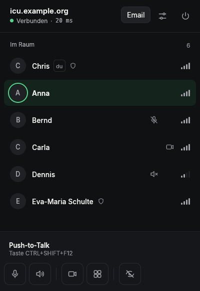
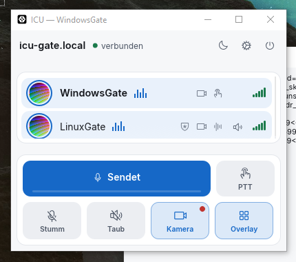
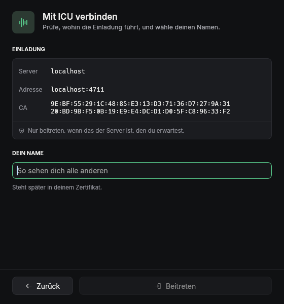
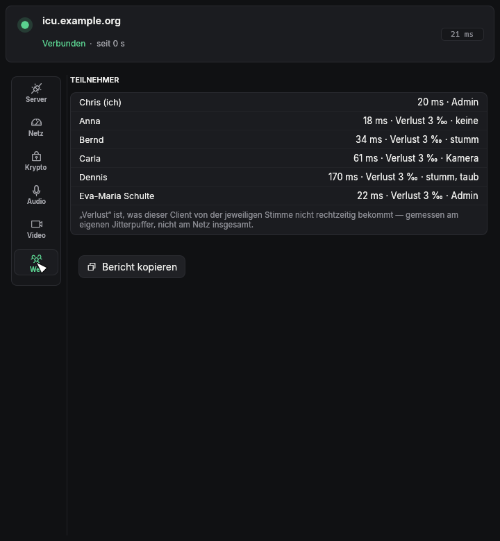
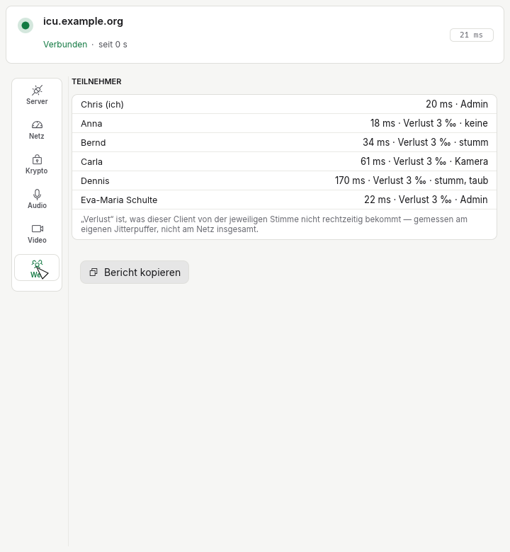

Audio
Opus 48 kHz mono, adaptiver Jitter-Buffer mit FEC und PLC, WebRTC-AEC3-Echounterdrückung, RNNoise-Rauschunterdrückung und automatische Mikrofon- und Empfangslautstärke.
Raum 01 · 1 Server · 0 Channels
ICU ist das, was von Mumble und TeamSpeak übrig bleibt, wenn man alles streicht, was eine feste Gruppe nicht braucht. Dafür bekommst du Opus-Sprachqualität, Echo- und Rauschunterdrückung, ein Kamera-Overlay fürs Spiel und mutual TLS statt Passwort.
v0.1 · Linux (Fedora, Debian) & Windows 10/11 · Apache-2.0 · Quellcode
↓ Auge gedrückt halten = PTT

01Prinzip
Kein Server-Browser, keine Channel-Hierarchie, keine Rollen außer Admin. Eine feste Gruppe braucht das nicht, und alles, was fehlt, kann weder kaputtgehen noch konfiguriert werden.
Zugang ist ein Zertifikat, keine Zeichenkette, die man weitergibt: Du bekommst eine Einladung, ziehst sie ins Fenster, wählst deinen Namen — fertig registriert.
02Funktionen
Opus 48 kHz mono, adaptiver Jitter-Buffer mit FEC und PLC, WebRTC-AEC3-Echounterdrückung, RNNoise-Rauschunterdrückung und automatische Mikrofon- und Empfangslautstärke.
Push-to-Talk oder Voice-Activation, global bindbar — auch auf Maustasten. Mit Release-Delay und Sende-Cue.
Sprecher-Indikator, Mute-, Deafen- und Kamerastatus. Lautstärke pro Person von 0 bis 200 %, gemerkt für immer.
Das Overlay ist ein eigenes transparentes Always-on-top-Fenster über Borderless-Spielen: click-through, GPU-gerendert, mit DPI-skalierter Sprecher-Hervorhebung. Kein Render-Hooking.
Mutual TLS mit einer server-eigenen CA. Beitritt per Einladungs-Bundle (.icu-Datei oder Text). Dein Zertifikat ist sichtbar, und der Passport exportiert deine ganze Identität auf ein anderes Gerät.
Einladen, befördern, sperren, stumm- oder taubschalten, rauswerfen — im Client oder per Server-CLI und Shell.
Ein statisches Server-Binary, automatischer Reconnect mit Backoff, Tray-Icon und ein Einrichtungsassistent beim ersten Start.
03Ansicht

Bild aus einer früheren Programmversion
.icu-Datei per Doppelklick öffnen

04Loslegen
Ein Paket, ein Setup-Dialog. Freigeben musst du nur einen UDP-Port (Vorgabe 4711).
# Fedora, AlmaLinux 10+
sudo dnf install ./icu-server-0.1.4-1.x86_64.rpm
# Debian 12+
sudo apt install ./icu-server_0.1.4-1_amd64.deb
sudo icu-server setup
sudo systemctl enable --now icu-server
sudo firewall-cmd --permanent --add-service=icu
sudo firewall-cmd --reloadWer sich als Erstes registriert, wird Admin. Jede Einladung lässt sich einmal einlösen und ist zeitlich begrenzt.
sudo icu-server invite --out /root/icu-admin.icu
icu-server invite --ttl 24h --out ~/bob.icuEinladung einfügen oder die Datei ins Fenster ziehen, Namen wählen, „Beitreten“. Der Assistent richtet Mikrofon, Sprechtaste und Klang ein.
# Fedora 42/43
sudo dnf install ./icu-client-0.1.4-1.fc$(rpm -E %fedora).x86_64.rpm
# Debian 13
sudo apt install ./icu_0.1.4-1+deb13_amd64.deb
# Windows: icu-0.1.4-windows-x86_64-setup.exe05Bewusst nicht
Jede Zeile hier ist eine Entscheidung. Wer eines davon braucht, sollte lieber Mumble oder TeamSpeak nehmen — und das ist in Ordnung.
Nur die Features, die wirklich gebraucht werden. Die sind dafür perfekt.
06Vertrauen
Jeder Server betreibt seine eigene CA. Die Einladung trägt den Vertrauensanker, das Client-Zertifikat ist deine Anmeldung. Auf jedem Audio-Datagramm sitzt zusätzlich ein HMAC-Tag: Ohne den Com-Schlüssel bleibt der Port stumm.
Der Verbindungspfad zeigt, wer worüber mit wem spricht. Der Server ist ein reiner Relay: Beide Strecken sind per QUIC/TLS 1.3 verschlüsselt, er kann die weitergeleiteten Medien aber lesen — deshalb betreibt ihn deine Gruppe selbst.
Apache-2.0. Jedes Release trägt SHA256SUMS und je Build eine BUILDINFO mit Commit und Compiler. Die Pakete enthalten THIRD-PARTY-LICENSES für den gebündelten Fremdcode. Quellcode und Releases liegen auf GitHub.
07Download
Lade Paketliste … Release-Archiv
Die SHA-256-Summen stehen neben jedem Paket und in SHA256SUMS. Im Download-Ordner:
sha256sum -c --ignore-missing SHA256SUMScertutil -hashfile icu-0.1.4-windows-x86_64.zip SHA256